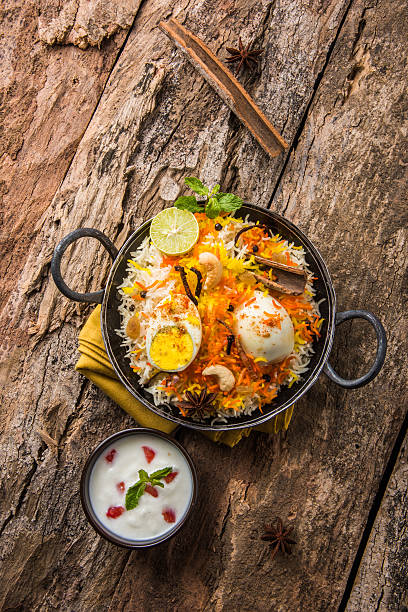

Biryani's legacy is a rich and layered one, tracing back to its origins in Central Asia and evolving through diverse culinary traditions and regional variations. Its history is intertwined with the Mughal emperors, Persian influences, and the development of distinct regional styles within India. Biryani is more than just a dish; it's a symbol of cultural heritage, regional identity, and a culinary tradition that continues to evolve.